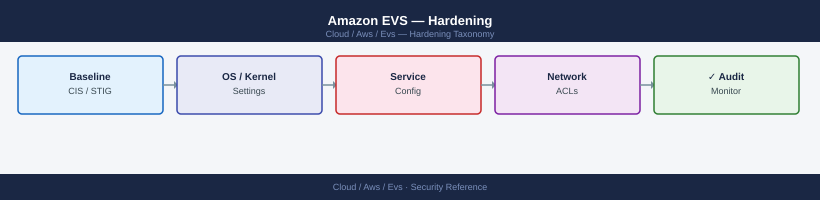

Amazon EVS — Hardening¶

direction: down
external: External / Untrusted {shape: rectangle}
nsxt_microsegmentation: "NSX-T Micro-segmentation" {shape: rectangle}
vpc_security_group_hardening: "VPC Security Group Hardening" {shape: rectangle}
esxi_hardening: "ESXi Hardening" {shape: rectangle}
sddc_manager_and_vcenter_hardening: "SDDC Manager and vCenter Hardening" {shape: rectangle}
compliance_and_audit: "Compliance and Audit" {shape: rectangle}
cis_vcf_hardening_checklist: "CIS VCF Hardening Checklist" {shape: rectangle}
core: "AWS EVS Core" {shape: hexagon}
external -> nsxt_microsegmentation: traffic in
nsxt_microsegmentation -> vpc_security_group_hardening
vpc_security_group_hardening -> esxi_hardening
esxi_hardening -> sddc_manager_and_vcenter_hardening
sddc_manager_and_vcenter_hardening -> compliance_and_audit
compliance_and_audit -> cis_vcf_hardening_checklist
cis_vcf_hardening_checklist -> core: secured path
Before you begin¶
- Access: Admin credentials on all affected systems
- Change management: security changes require CAB approval in most environments
- Rollback plan: document current state before any security control change
- Testing: validate in a non-production environment first where possible
NSX-T Micro-segmentation¶
NSX-T DFW rules are evaluated top-to-bottom. The first matching rule wins. The default-deny rule placed at the bottom acts as a catch-all for any traffic not explicitly permitted by rules above it. This means you must explicitly allow every required traffic flow — the burden of proof is on the allow, not the deny.
Concrete three-tier DFW rule set (web → app → db pattern):
# Create security groups for workload tiers using tag-based membership
# Tag VMs in vCenter with scope=tier, tag=web | app | db
# Create NSX-T security groups
for TIER in web app db; do
curl -sk -u "admin:$NSX_PASSWORD" \
-X POST "$NSX_URL/api/v1/ns-groups" \
-H "Content-Type: application/json" \
-d "{
\"display_name\": \"sg-${TIER}-tier\",
\"members\": [{
\"resource_type\": \"NSGroupTagExpression\",
\"scope\": \"tier\",
\"tag\": \"${TIER}\",
\"scope_op\": \"EQUALS\",
\"tag_op\": \"EQUALS\"
}]
}" | python3 -c "import sys,json; d=json.load(sys.stdin); print(f\"Created: {d['id']}\")"
done
# Create the explicit-allow firewall section ABOVE the default-deny section
curl -sk -u "admin:$NSX_PASSWORD" \
-X POST "$NSX_URL/api/v1/firewall/sections?operation=insert_top" \
-H "Content-Type: application/json" \
-d '{
"display_name": "Three-Tier App Policy",
"section_type": "LAYER3",
"stateful": true,
"rules": [
{
"display_name": "Allow internet to web tier (HTTPS)",
"action": "ALLOW",
"logged": true,
"destinations": [{"target_type": "NSGroup", "target_id": "<sg-web-tier-id>"}],
"services": [{"target_type": "NSService", "target_display_name": "HTTPS"}],
"direction": "IN"
},
{
"display_name": "Allow web tier to app tier",
"action": "ALLOW",
"logged": false,
"sources": [{"target_type": "NSGroup", "target_id": "<sg-web-tier-id>"}],
"destinations": [{"target_type": "NSGroup", "target_id": "<sg-app-tier-id>"}],
"services": [{"target_type": "NSService", "target_display_name": "HTTP"}],
"direction": "IN_OUT"
},
{
"display_name": "Allow app tier to db tier",
"action": "ALLOW",
"logged": false,
"sources": [{"target_type": "NSGroup", "target_id": "<sg-app-tier-id>"}],
"destinations": [{"target_type": "NSGroup", "target_id": "<sg-db-tier-id>"}],
"services": [{"target_type": "NSService", "target_display_name": "MySQL"}],
"direction": "IN_OUT"
}
]
}' | python3 -m json.tool
# Create default-deny section at bottom of rule list
curl -sk -u "admin:$NSX_PASSWORD" \
-X POST "$NSX_URL/api/v1/firewall/sections?operation=insert_bottom" \
-H "Content-Type: application/json" \
-d '{
"display_name": "Default Deny All",
"section_type": "LAYER3",
"stateful": true,
"rules": [{
"display_name": "Deny All",
"action": "DROP",
"logged": true,
"sources_excluded": false,
"destinations_excluded": false,
"ip_protocol": "IPV4_IPV6",
"direction": "IN_OUT"
}]
}'
Enable logging on all deny hits. Denied traffic logs are essential for identifying misconfigured applications and for security incident investigation. Store DFW logs in a syslog target (CloudWatch or SIEM) with at least 90 days retention.
VPC Security Group Hardening¶
EVS management ENIs (those connecting the VMkernel adapters and management components to the VPC) should be locked down to specific source CIDRs. The common mistake is allowing 0.0.0.0/0 for management ports — this exposes vCenter and NSX-T management to any VPC resource.
Required ports per VMkernel type and component:
| Port | Protocol | Purpose | Source |
|---|---|---|---|
| 443 | TCP | vCenter HTTPS, NSX-T HTTPS, SDDC Manager HTTPS | Management CIDR only |
| 902 | TCP/UDP | ESXi host management (hostd) | vCenter ENI CIDR |
| 8301 | TCP/UDP | SDDC Manager internal | Management subnet |
| 2377 | TCP | ESXi vSAN cluster communication | ESXi host CIDRs only |
| 4500 | UDP | HCX IPSEC (service mesh VTEP) | HCX peer CIDR |
| 500 | UDP | HCX IKE (IPSEC key exchange) | HCX peer CIDR |
| 6081 | UDP | NSX-T Geneve tunnel (TEP) | ESXi host CIDRs only |
# Restrict EVS management SG — only allow from management bastion or Direct Connect CIDR
aws ec2 authorize-security-group-ingress \
--group-id sg-evs-management \
--protocol tcp --port 443 --cidr 10.0.0.0/8 # corporate range via DX
aws ec2 authorize-security-group-ingress \
--group-id sg-evs-management \
--protocol tcp --port 902 --cidr 10.0.0.0/8 # ESXi host access
# Deny internet-bound traffic from EVS VPC (no IGW attached by default)
# Verify: no Internet Gateway attached to EVS VPC
aws ec2 describe-internet-gateways \
--filters Name=attachment.vpc-id,Values=$EVS_VPC_ID
# Enable VPC Flow Logs for EVS VPC (security audit requirement)
aws ec2 create-flow-logs \
--resource-ids $EVS_VPC_ID \
--resource-type VPC \
--traffic-type ALL \
--log-destination-type s3 \
--log-destination "arn:aws:s3:::evs-flow-logs-bucket"
# Audit current SG rules for EVS management ENIs
aws ec2 describe-network-interfaces \
--filters Name=subnet-id,Values=$EVS_MGMT_SUBNET_ID \
--query 'NetworkInterfaces[*].[NetworkInterfaceId,Groups[*].GroupId]' \
--output table
# Check for overly permissive rules (0.0.0.0/0 or ::/0 sources)
aws ec2 describe-security-groups \
--group-ids sg-evs-management \
--query 'SecurityGroups[*].IpPermissions[?IpRanges[?CidrIp==`0.0.0.0/0`]]'
ESXi Hardening¶
CIS benchmark items specific to EVS deployments:
# Disable SSH after deployment (SSH should only be enabled during maintenance)
# Via PowerCLI:
Get-VMHost | ForEach-Object {
Get-VMHostService -VMHost $_ | Where-Object {$_.Key -eq "TSM-SSH"} | Stop-VMHostService -Confirm:$false
Set-VMHostService -HostService (Get-VMHostService -VMHost $_ | Where-Object {$_.Key -eq "TSM-SSH"}) -Policy "off"
}
# Enable Lockdown Mode (Normal) — prevents direct ESXi access, requires vCenter
# Normal lockdown: DCUI + vCenter; Strict lockdown: vCenter only (no DCUI)
Get-VMHost | Foreach { $_.ExtensionData.EnterLockdownMode() }
# Verify NTP sync on all hosts
Get-VMHost | Get-VMHostNtpServer
Get-VMHost | ForEach-Object { (Get-View $_.Id).Runtime.DasHostState }
# Set DCUI.Access to restrict DCUI access to root only
Get-VMHost | ForEach-Object {
$adv = Get-AdvancedSetting -Entity $_ -Name "DCUI.Access"
Set-AdvancedSetting -AdvancedSetting $adv -Value "root" -Confirm:$false
}
# Configure syslog on all ESXi hosts to ship to SIEM/CloudWatch
Get-VMHost | ForEach-Object {
$adv = Get-AdvancedSetting -Entity $_ -Name "Syslog.global.logHost"
Set-AdvancedSetting -AdvancedSetting $adv -Value "udp://syslog.internal.example.com:514" -Confirm:$false
}
# Apply ESXi firewall rule to restrict management network access
# Allow only specific source CIDR for vCenter/DCUI communication
Get-VMHost | ForEach-Object {
$esxcli = Get-EsxCli -VMHost $_ -V2
$esxcli.network.firewall.ruleset.allowedip.add.Invoke(@{rulesetid="webAccess"; ipaddress="10.0.0.0/8"})
}
# Verify host lockdown mode and SSH status across all hosts
Get-VMHost | Select Name,
@{N="LockdownMode";E={$_.ExtensionData.Config.LockdownMode}},
@{N="SSH";E={(Get-VMHostService -VMHost $_ | Where Key -eq "TSM-SSH").Running}}
SDDC Manager and vCenter Hardening¶
# Check TLS versions accepted by vCenter (VCF 5.x defaults to TLS 1.2+ only)
openssl s_client -connect $VCENTER:443 -tls1 </dev/null 2>&1 | grep -E "handshake|Protocol"
openssl s_client -connect $VCENTER:443 -tls1_1 </dev/null 2>&1 | grep -E "handshake|Protocol"
openssl s_client -connect $VCENTER:443 -tls1_2 </dev/null 2>&1 | grep -E "handshake|Protocol"
# TLS 1.0 and 1.1 should show handshake failure; TLS 1.2 should succeed
# Reduce vCenter session timeout from default 120 min to 30 min
$settingMgr = Get-View -Id "OptionManager-VpxSettings"
$option = New-Object VMware.Vim.OptionValue
$option.Key = "config.vpxd.sessionTimeout"
$option.Value = "30"
$settingMgr.UpdateValues(@($option))
# Verify current session timeout
$settingMgr.QueryOptions("config.vpxd.sessionTimeout") | Select Key, Value
# Enable vCenter Audit Event Logging to syslog
# vCenter UI → Administration → vCenter Server Settings → Syslog
# Via vCenter REST API:
curl -sk -u "administrator@vsphere.local:$PASS" \
-X PUT "https://$VCENTER/api/appliance/logging/forwarding" \
-H "Content-Type: application/json" \
-d '[{
"hostname": "syslog.internal.example.com",
"port": 514,
"protocol": "UDP"
}]'
# Verify syslog forwarding configuration
curl -sk -u "administrator@vsphere.local:$PASS" \
"https://$VCENTER/api/appliance/logging/forwarding" | python3 -m json.tool
Compliance and Audit¶
VCF generates audit logs from multiple components. Ship all of these to a centralized location for SIEM correlation and compliance evidence.
| Log Source | Content | Ship To |
|---|---|---|
| vCenter events | VM create/delete, permission changes, admin logins | Syslog → SIEM |
| NSX-T audit log | DFW rule changes, gateway changes, role assignments | Syslog → SIEM |
| SDDC Manager audit log | Host commissioning, cluster operations, password rotation | Syslog → SIEM |
| ESXi auth.log | SSH logins, DCUI access, lockdown mode changes | Syslog → SIEM |
| AWS CloudTrail | All evs:, ec2:, iam:* API calls | CloudWatch Logs → SIEM |
| VPC Flow Logs | Accept/reject decisions on all EVS ENI traffic | S3 or CloudWatch Logs |
# Configure NSX-T audit log shipping to syslog
curl -sk -u "admin:$NSX_PASSWORD" \
-X POST "$NSX_URL/api/v1/node/services/syslog/exporters" \
-H "Content-Type: application/json" \
-d '{
"server": "syslog.internal.example.com",
"port": 514,
"protocol": "UDP",
"level": "INFO",
"exporter_name": "central-syslog"
}' | python3 -m json.tool
# Verify NSX-T syslog exporter
curl -sk -u "admin:$NSX_PASSWORD" \
"$NSX_URL/api/v1/node/services/syslog/exporters" | python3 -m json.tool
# Set up CloudWatch Logs subscription for EVS-related CloudTrail events
# Create CloudWatch Logs metric filter for EVS destructive actions
aws logs put-metric-filter \
--log-group-name CloudTrail \
--filter-name EVSDestructiveActions \
--filter-pattern '{ $.eventSource = "evs.amazonaws.com" && ($.eventName = "DeleteEnvironment*" || $.eventName = "DeleteEnvironmentHost*") }' \
--metric-transformations metricName=EVSDestructiveActions,metricNamespace=SecurityAlerts,metricValue=1
# Create alarm on that metric
aws cloudwatch put-metric-alarm \
--alarm-name EVS-Destructive-Action-Alert \
--metric-name EVSDestructiveActions \
--namespace SecurityAlerts \
--period 300 --statistic Sum \
--threshold 1 --comparison-operator GreaterThanOrEqualToThreshold \
--alarm-actions arn:aws:sns:us-east-1:123456789012:security-alerts
CIS VCF Hardening Checklist¶
| Control | Action |
|---|---|
| Disable ESXi SSH after setup | Set TSM-SSH service to off; use vCenter for management |
| Enable ESXi Lockdown Mode | Normal lockdown: vCenter-managed access only |
| Enforce NTP sync | All hosts synchronized; etcd requires < 500ms drift |
| Remove default admin account aliases | Rename or disable default accounts after initial setup |
| Enable vCenter SSO password policy | Minimum 12 chars, complexity, 90-day rotation |
| Enable vSAN encryption at rest | Encrypt data at rest using NKP or external KMS |
| Enable VPC Flow Logs | Capture all traffic for audit trail |
| NSX-T default deny DFW | Explicit-allow model; log all deny hits |
| MFA for AWS console | Enforce MFA policy for all IAM users |
| Rotate Secrets Manager credentials | Rotate SDDC Manager + vCenter passwords quarterly |
| Reduce vCenter session timeout | Set to 30 minutes; default 120 is too long |
| DCUI.Access = root only | Restrict DCUI to root; remove any extra accounts |
| Ship all audit logs to SIEM | vCenter, NSX-T, SDDC Manager, ESXi auth.log |
| CloudWatch alarm on EVS deletions | Alert on any evs:Delete* CloudTrail event |